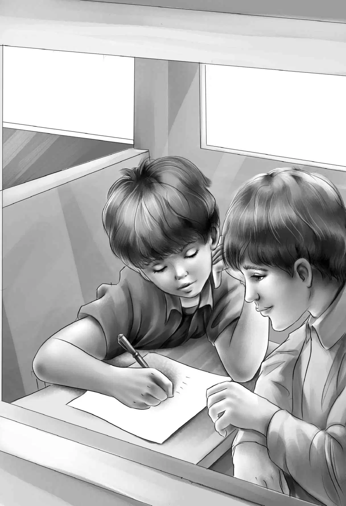

The train was creeping along. It had hardly left the freight yard in the city.
“I wonder why we don’t go faster，” said Henry. He looked out of the window.
Jessie said， “Maybe they have to go slowly when they have just turned the train around.”
But then the train stopped.
“Now what’s the matter？” asked Benny. “I’m sure Al will tell us if there is anything wrong.”
“Mr. Carr will tell us，” said Grandfather.
As he spoke， Mr. Carr came down the ladder and tapped on the door. Henry opened it.
“Don’t be worried，” said Mr. Carr. “We are having a little trouble with the engine. The men are starting to fix it already. You’ll just have to sit here for a bit.”
“What is wrong？” asked Grandfather.
“The waterline broke， but Mr. Davis says we’ll be off in an hour.”
“An hour！” said Benny. “I thought nothing could happen to a Diesel.”
“Well， young man， plenty can happen. We never know. I’m sure you folks can think of things to do.” He laughed. “You can’t help us this time， so just amuse yourselves.” He walked quickly away.
The Aldens sat down in Number 777 and looked at each other.
“I don’t mind waiting an hour，” said Jessie.
Henry said， “If we really can’t help the men， we can think about the Thin Man. We ought to let him know we found the diamonds.”
“How can we let him know if we can’t find him？” asked Violet.
“There must be some way，” said Benny. “That poor man wasn’t to blame at all. Just think how he must feel.”
Jessie said， “I’ve always been sorry for him. Of course he made a mistake to run away. That’s the worst thing he could have done.”
Benny nodded. “He made a mistake all right. But the police were so sure he stole the necklace， I don’t blame him， really.”
“You don’t blame him， Ben？” asked Grandfather， looking right at his grandson.
“No， I don’t. We wouldn’t want to be arrested， would we？Even if we hadn’t done anything wrong？”
Violet said， “I wouldn’t， I’m sure. I wonder where he went. And how could he earn a living？Somebody would be sure to see him.”
“It’s a mystery still，” said Jessie. “It happened so long ago. The Thin Man could be anywhere.”
“He must be somewhere，” said Benny. “And that’s what I’m going to do. I’m going to think of some way to send him a message. He ought to be told.”
Henry winked. “We might get an airplane to do skywriting.”
Benny stood up. “Boy， that gives me an idea！” he said. “What about radio？We could get a radio station to send a message.”
Henry nodded.
Jessie asked， “Henry， what would you say on a radio？We can’t say diamonds or necklace because everyone will answer.”
“I’d say a lost article，” said Henry. “And tell him to come to Pinedale. That will give him time to get there.”
Benny sat down at the desk. “Let’s write this down，” he said. “Then it will be ready when we need it. We’ll begin， ‘Notice to Thin Man.’OK， Henry？”
“That’s fine，” said Henry. “There aren’t many men who are called thin men.”
In a few minutes Benny had written this piece. He read it aloud to his family.

Notice to Thin Man：
Chi-Chi’s lost article has been found.
She hid it herself. Please come Thursday
to Pinedale and Number 777.
“Good！” said Henry. “I should think he could understand that， wherever he is. And now where will we find a radio station？”
“I know！” shouted Benny. “Right here in this big city. Will you help us， Grandfather？”
“Certainly，” said Mr. Alden， getting up. “We’ll have time if we get a taxi and hurry.”
“I’m ready，” said Benny.
“You and Ben go， Grandfather，” said Henry. “Two can hurry faster than five. We’ll walk down to the engine and tell Mr. Carr where you are.”
Mr. Alden and Benny got off the caboose and walked quickly back to Main Street.
“A taxi driver will know where the radio station is，” said Mr. Alden. “Let’s ask this one.”
In ten minutes Benny and his grandfather were standing in the radio office. Grandfather quickly told the man what he wanted. When the man read the notice， he smiled.
“You sit down right here，” he said， “and you’ll hear what I say. This station reaches for miles and miles.”
Benny said， “Will you keep on saying it？He may not be near a radio.”
“I will， young man.”
“My grandfather will let you know when we have an answer，” said Benny.
“You seem sure that this man will answer，” said the radio man.
“Oh， yes， I am，” said Benny. “He’ll be so pleased.”
After Mr. Alden had thanked the man， he told Benny to wait. “I have to make a few telephone calls，” he said.
Benny was used to this. Grandfather was always telephoning.
When the taxi returned to the train， the men were still working on the waterline. Mr. Carr called， “Ten minutes more will do it！”
“Good！” Mr. Alden called back.
When the family sat down again in the caboose， Mr. Alden said， “Let me see. We spent five days on the train coming out. We should get to Pinedale the day after tomorrow.”
Benny said， “That will give the Thin Man nearly two days to get to Pinedale. Oh， I hope he listens to the radio！”
Jessie had a surprise for them. “See what Mr. Carr gave me. A transistor radio.” She took a tiny radio out of her bag and set it on the table.
“Good for Mr. Carr，” said Grandfather. “Just what we need.”
Almost at once a voice gave the notice. They could hear every word.
“The same man！” said Benny.
Then the train started. Soon they were rolling along to make up time.
Jessie said， “Let’s not forget Charley. We see him first at Glass Factory before we ever get to Pinedale.”
“And how will we ever find Charley？” asked Benny. “It seems as if we are always looking for lost people or lost things. You won’t want to walk through the woods， Grandfather， as I did.”
“I certainly don’t expect to walk through any woods，” said Mr. Alden. “But we’ll find him.”
Everyone helped Jessie with the cooking. They swept out both cabooses and made everything neat. They stopped once for milk. They had to wear sweaters this time when they sat on the back platform. The leaves were starting to turn red and yellow， and the country was beautiful. All the time they talked about their friends in Glass Factory Junction and Pinedale. The train rattled along faster and faster.
After a day and a half， Benny said， “That didn’t really seem long. And we are almost at Glass Factory. Let’s see if Charley is there.”
The Aldens didn’t need to worry. Charley was standing on the platform when Number 777 came to a stop. The two Cutler boys were there with their father. Mr. Lidstone from the factory was there. The Aldens jumped down.
“How did you know we were coming today？” asked Benny.
Mr. Lidstone laughed and said， “This is the only time for Number 777 to come through here， and you’d have to be on it. And we had some good reasons to expect you.”
Benny ran right over to Charley. “Something for you， Charley，” he said. “You were so good to me when I was lost.” He gave him the knife. Charley was very much pleased. But when he opened it， he was more pleased than ever.
“Oh， a screwdriver，” he said. “And I’ve always needed something to punch holes with. This knife will do everything！And how is your knee？”
“Fine，” said Benny. “And thanks to you， I didn’t get poison ivy！”
Mr. Alden was walking over to Mr. Cutler who owned the talking horse. They began to speak in low voices. All at once they all heard a strange sound behind the station.
“That sounds like a horse！” shouted Benny.
“It is a horse，” said the Cutler boy. “The talking horse. Didn’t you know？”
“No，” said Henry. “That’s just like Grandfather.”
“He telephoned to us，” said the boy， laughing.
“Yes， Major’s going on the same train with you， in a boxcar，” added Mr. Cutler.
Everyone rushed around to see the horse. There stood Major， pawing the ground and shaking his head. He was tied to a tree. Mr. Cutler untied the rope and led him to the train. A boxcar was ready. A heavy board led up into the boxcar. Mr. Cutler went up the board first， and Major followed him.
When Major was safely in his boxcar， the whistle blew and the train started. Everyone waved to the Aldens.
Charley said， “I don’t think I’ll ever see Benny Alden again.”
“Well，” said the Cutler boy， “you’ve got a knife to remember him by.”
Charley thought for a minute.
Then he said， “But I don’t need a knife to remind me of Benny Alden. Nobody could ever forget Benny.”